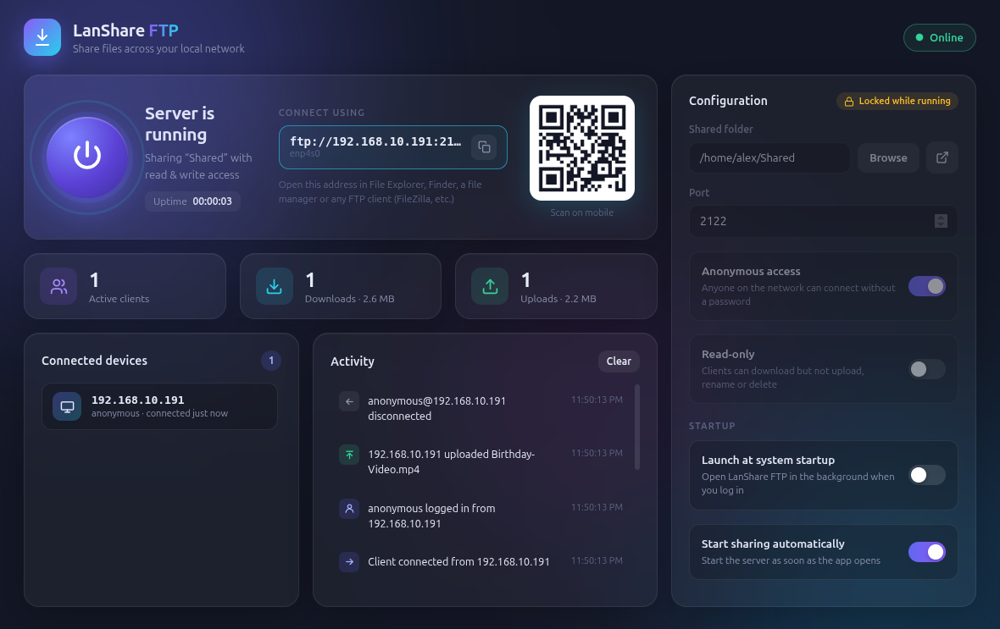

One-click server
Pick a folder and press the power button. Your files are shared on the network right away.
LanShare FTP turns any folder on your computer into a fast FTP server. Phones, laptops and PCs on the same Wi-Fi can browse, download and upload. No cables, no cloud, no accounts.

A full FTP server with a simple interface. No terminal or config files needed.
Pick a folder and press the power button. Your files are shared on the network right away.
Scan the QR code with your phone to connect. No need to type IP addresses.
Allow anyone to connect, or require a username and password. Read-only mode stops uploads and deletes.
See connected devices, every download and upload, and the total data transferred as it happens.
Start with your computer and share automatically from the system tray, so your files are always ready.
Use Windows Explorer, macOS Finder, Linux file managers, FileZilla, or any FTP app on Android or iOS.
Download LanShare FTP for your operating system below and open it.
Choose what to share, set a password if you like, then press the power button.
On another device, open the ftp:// address shown in the app or scan the QR code.
Free for Windows, macOS and Linux. Latest release: v1.1.0
Windows 10 / 11 · 64-bit
Download installer Portable .exe (no install)macOS 11 or later
Apple Silicon (M1–M4) Intel Mac (.dmg)64-bit · Ubuntu, Debian, Fedora, Arch…
AppImage Debian / Ubuntu (.deb)xattr -cr "/Applications/LanShare FTP.app" in Terminal.chmod +x LanShare-FTP-*.AppImage). On Ubuntu 22.04+ you may need sudo apt install libfuse2t64.2121 and the passive range 50000–50100 so other devices can connect.